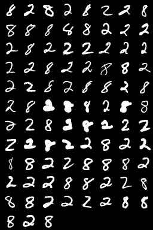
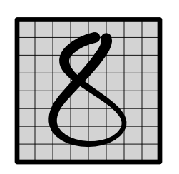
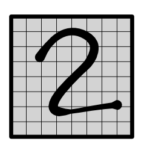
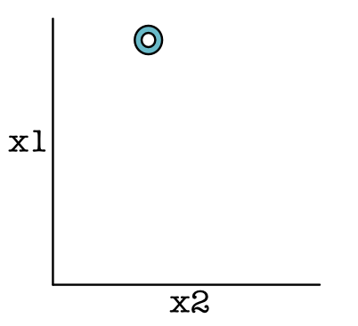
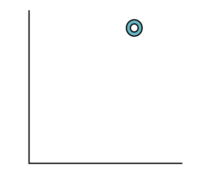
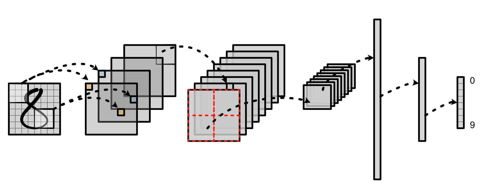
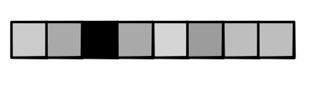
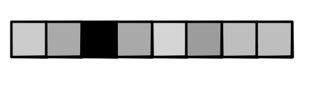

Machine Learning Engineering
Lecture 21
Synthesis
Today's Class
Review: Efficiency
Overview
Image Classification
Efficiency
Constraints
Memory must be typed
Memory must be constant size
Memory must be relatively small
GPU
Lots of parallelism for computation
Challenge: reduce memory reads
Local > Shared > Global
Counts
Significantly reduced global reads and writes
Needed block shared memory to do this
Sliding Average
Compute sliding average over a list
sub_size = 2
a = [4, 2, 5, 6, 2, 4]
out = [3, 3.5, 5.5, 4, 3]Example: Local Sum
Compute sliding average over a list
def slide_py(out, a):
for i in range(out.size):
out[i] = 0
for j in range(sub_size):
out[i] += a[i + j]
out[i] = out[i] / sub_sizeCUDA
Each thread handles 1 output position
Copy data from array to shared memory (be sure to handle edges)
Threads loop in parallel doing averaging
Write out at the end
Better CUDA
Two global reads per thread
def slide_cuda(out, a):
shared = numba.cuda.shared.array(THREADS + sub_size)
i = numba.cuda.blockIdx.x * THREADS \
+ numba.cuda.threadIdx.x
local_idx = numba.cuda.threadIdx.x
if i + sub_size < a.size:
shared[local_idx] = a[i]
if local_idx < sub_size and i + THREADS < a.size:
shared[local_idx + THREADS] = a[i + THREADS]
numba.cuda.syncthreads()
temp = 0
for j in range(sub_size):
temp += shared[local_idx + j]
out[i] = temp / sub_sizeQuiz
Suggestions: Map
When do you need to index?
When do you need to broadcast?
Can you directly utilize storage?
Suggestions: Zip
When can you avoid indexing?
When can you avoid broadcasting?
When does zip become a (fast) map?
Suggestions: Reduce
Special cases: dimension reduce + full reduce, how do they differ?
Do we need to call index everytime?
Do we need to write to global memory every time?
Suggestions: Matmul
Inner loop is key: can we optimize it?
Key special case: Batch Matrix-Vector.
GPU?
Overview
Where we are at
Testing, Visualization, Math
Scalars, Autodifferentiation
Tensors, Gradients
Parallel, Hardware
Next Goal
Build a real model
What more?
General framework to build tools
Can learn through all sorts of functional transformations
Can target different predictions and loss functions
Architecture
Goal: Image Recognition
Data Set
{kind=link}
Data Labels
 {kind=link}
{kind=link}
Data Points
 {kind=link}
{kind=link}
Strategy
Build a neural network to classify these
Three Challenges
How do we handle input features?
How do we look at variable-size areas?
How do we predict multiple labels?
Network
{kind=link}
Challenge 1: Input Representation
Challenge 1: Input Representation

Challenge 1: Input Features

Challenge 1: Input Features

Challenge 1: Input Representation

Challenge 2: Variable Size Area

Challenge 2: Variable Size Area
Challenge 2: MNist Zoom

Challenge 3: Multiple Output
 

{kind=link}
Challenge 3: Multiple Output